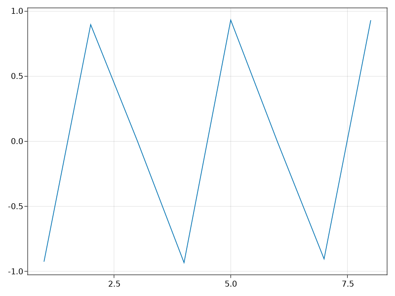

write your EaRyd example with Literate.jl here calculate the ground states of a ladder system
using EaRyd
using KrylovKit
using SparseArrays
using CairoMakiewe create a two ladder of atoms with 8 sites in each row
n_sites = 88x coordinate for each row
ax = 1
L = (n_sites - 1)* ax
atomx = collect(0.0:ax:L)8-element Vector{Float64}:
0.0
1.0
2.0
3.0
4.0
5.0
6.0
7.0y coordinate for the two rows
ay1 = 0
ay2 = 22generate the atom sites one by one, since we dont have rectangular lattice now
atom_coordinate = [(0.0, 0.0)]
for ii = 2: n_sites
push!(atom_coordinate, (atomx[ii], ay1))
end
for ii = 1: n_sites
push!(atom_coordinate, (atomx[ii], ay2))
endHamiltonian parameters
C = 2.3^6
Δ = 4 * ones(2*n_sites)
Ω = 1* ones(2*n_sites)
Δ[2* n_sites] += -0.05 # addtional detuning term to break the symmetry3.95create the Hamiltonian
h = rydberg_h(atom_coordinate; C=C, Δ=Δ, Ω=Ω)Hamiltonian
Term 1
1.0/2 σ^x +
1.0/2 σ^x +
1.0/2 σ^x +
1.0/2 σ^x +
1.0/2 σ^x +
1.0/2 σ^x +
1.0/2 σ^x +
1.0/2 σ^x +
1.0/2 σ^x +
1.0/2 σ^x +
1.0/2 σ^x +
1.0/2 σ^x +
1.0/2 σ^x +
1.0/2 σ^x +
1.0/2 σ^x +
1.0/2 σ^x
Term 2
4.0 n +
4.0 n +
4.0 n +
4.0 n +
4.0 n +
4.0 n +
4.0 n +
4.0 n +
4.0 n +
4.0 n +
4.0 n +
4.0 n +
4.0 n +
4.0 n +
4.0 n +
3.95 n
Term 3
∑(n=1:16) 148.0/|r_i - r_j|^6 n_i n_jthe sparse matrix for the hamiltonian
H0 = SparseMatrixCSC(h)65536×65536 SparseArrays.SparseMatrixCSC{ComplexF64, Int64} with 1114111 stored entries:
⣿⣿⣾⢦⡀⠳⣄⠀⠀⠀⠳⣄⠀⠀⠀⠀⠀⠀⠀⠀⠳⣄⠀⠀⠀⠀⠀⠀⠀⠀⠀⠀⠀⠀⠀⠀⠀⠀⠀⠀
⠺⣟⢻⣶⣿⡂⠈⠳⣄⠀⠀⠈⠳⣄⠀⠀⠀⠀⠀⠀⠀⠈⠳⣄⠀⠀⠀⠀⠀⠀⠀⠀⠀⠀⠀⠀⠀⠀⠀⠀
⢤⡈⠻⠻⠿⣧⣤⣠⡈⠳⠄⠀⠀⠈⠳⣄⠀⠀⠀⠀⠀⠀⠀⠈⠳⣄⠀⠀⠀⠀⠀⠀⠀⠀⠀⠀⠀⠀⠀⠀
⠀⠙⢦⡀⠀⣻⣿⣿⣙⣦⡀⠀⠀⠀⠀⠈⠳⣄⠀⠀⠀⠀⠀⠀⠀⠈⠳⣄⠀⠀⠀⠀⠀⠀⠀⠀⠀⠀⠀⠀
⠀⠀⠀⠙⢦⡈⠳⣼⣿⣿⡆⠀⠀⠀⠀⠀⠀⠈⠳⣄⠀⠀⠀⠀⠀⠀⠀⠈⠳⣄⠀⠀⠀⠀⠀⠀⠀⠀⠀⠀
⠙⢦⡀⠀⠀⠁⠀⠈⠈⠉⣿⣿⣾⢦⡀⠳⣄⠀⠀⠈⠀⠀⠀⠀⠀⠀⠀⠀⠀⠈⠳⣄⠀⠀⠀⠀⠀⠀⠀⠀
⠀⠀⠙⢦⡀⠀⠀⠀⠀⠀⠺⣟⢻⣶⣿⡂⠈⠳⣄⠀⠀⠀⠀⠀⠀⠀⠀⠀⠀⠀⠀⠈⠳⣄⠀⠀⠀⠀⠀⠀
⠀⠀⠀⠀⠙⢦⡀⠀⠀⠀⢤⡈⠻⠻⠿⣧⣤⣠⡈⠳⠀⠀⠀⠀⠀⠀⠀⠀⠀⠀⠀⠀⠀⠈⠳⣄⠀⠀⠀⠀
⠀⠀⠀⠀⠀⠀⠙⢦⡀⠀⠀⠙⢦⡀⠀⣻⣿⣿⣙⣦⠀⠀⠀⠀⠀⠀⠀⠀⠀⠀⠀⠀⠀⠀⠀⠈⠳⣄⠀⠀
⠀⠀⠀⠀⠀⠀⠀⠀⠙⢦⡀⠀⠀⠙⢦⡈⠳⣼⣿⣿⠀⠀⠀⠀⠀⠀⠀⠀⠀⠀⠀⠀⠀⠀⠀⠀⠀⠈⠳⣄
⠙⢦⡀⠀⠀⠀⠀⠀⠀⠀⠀⠀⠀⠀⠀⠀⠀⠀⠀⠀⣿⣿⡟⢦⡈⠳⣄⠀⠀⠈⠳⣄⠀⠀⠀⠀⠀⠀⠀⠀
⠀⠀⠙⢦⡀⠀⠀⠀⠀⠀⠀⠀⠀⠀⠀⠀⠀⠀⠀⠀⠻⣍⣿⣿⣯⠀⠈⠳⣄⠀⠀⠈⠳⣄⠀⠀⠀⠀⠀⠀
⠀⠀⠀⠀⠙⢦⡀⠀⠀⠀⠀⠀⠀⠀⠀⠀⠀⠀⠀⠀⢦⡈⠋⠛⢻⣶⣦⣦⡈⠓⠀⠀⠀⠈⠳⣄⠀⠀⠀⠀
⠀⠀⠀⠀⠀⠀⠙⢦⡀⠀⠀⠀⠀⠀⠀⠀⠀⠀⠀⠀⠀⠙⢦⡀⠨⣿⠿⣧⣽⡦⠀⠀⠀⠀⠀⠈⠳⣄⠀⠀
⠀⠀⠀⠀⠀⠀⠀⠀⠙⢦⡀⠀⠀⠀⠀⠀⠀⠀⠀⠀⡀⠀⠀⠙⢦⠈⠳⡿⣿⣿⣀⡀⡀⠀⢀⠀⠀⠈⠳⣄
⠀⠀⠀⠀⠀⠀⠀⠀⠀⠀⠙⢦⡀⠀⠀⠀⠀⠀⠀⠀⠙⢦⡀⠀⠀⠀⠀⠀⠀⠸⣿⣿⡟⢦⡈⠳⣄⠀⠀⠀
⠀⠀⠀⠀⠀⠀⠀⠀⠀⠀⠀⠀⠙⢦⡀⠀⠀⠀⠀⠀⠀⠀⠙⢦⡀⠀⠀⠀⠀⠈⠻⣍⣿⣿⣯⠀⠈⠳⣄⠀
⠀⠀⠀⠀⠀⠀⠀⠀⠀⠀⠀⠀⠀⠀⠙⢦⡀⠀⠀⠀⠀⠀⠀⠀⠙⢦⡀⠀⠀⠐⢦⡈⠋⠛⢻⣶⣦⣦⡈⠓
⠀⠀⠀⠀⠀⠀⠀⠀⠀⠀⠀⠀⠀⠀⠀⠀⠙⢦⡀⠀⠀⠀⠀⠀⠀⠀⠙⢦⡀⠀⠀⠙⢦⡀⠨⣿⠿⣧⣽⡦
⠀⠀⠀⠀⠀⠀⠀⠀⠀⠀⠀⠀⠀⠀⠀⠀⠀⠀⠙⢦⠀⠀⠀⠀⠀⠀⠀⠀⠙⢦⠀⠀⠀⠙⢦⠈⠳⡿⣿⣿diagonize the hamiltonian
vals, vecs, info = KrylovKit.eigsolve(H0, 4, :SR)
state1 = ArrayReg(vecs[1])ArrayReg{1, ComplexF64, Array...}
active qubits: 16/16measruing the magnetization for the ground state
output_mat1 = zeros(Float64, 2*n_sites)
for i in 1:2*n_sites
output_mat1[i] = real(expect(put(2*n_sites, i=>Op.n), state1))
end
println(output_mat1)[0.03664241855333094, 0.8991807296046578, 0.008432651032618418, 0.0027720463028558543, 0.93577522231583, 0.005136445349422783, 0.0013037673093274878, 0.9628372805133166, 0.9624520014710966, 0.001377862103967974, 0.005168909275317261, 0.9359261213570748, 0.00270329729118315, 0.007810489797102449, 0.9059497769676592, 0.031181088002666158]
plot the difference of the magnetization in the two rows
n_diff = output_mat1[1:n_sites]- output_mat1[n_sites+1: 2*n_sites]
lines(1:n_sites, n_diff)
This page was generated using Literate.jl.